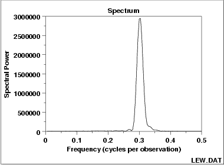

|
1.
Exploratory Data Analysis
1.3. EDA Techniques 1.3.3. Graphical Techniques: Alphabetic
|
|||
|
Purpose: Examine Cyclic Structure |
A spectral plot (
Jenkins and Watts 1968 or
Bloomfield 1976)
is a graphical technique for examining cyclic structure in the
frequency domain. It is a smoothed Fourier transform of the
autocovariance function.
The frequency is measured in cycles per unit time where unit time is defined to be the distance between 2 points. A frequency of 0 corresponds to an infinite cycle while a frequency of 0.5 corresponds to a cycle of 2 data points. Equi-spaced time series are inherently limited to detecting frequencies between 0 and 0.5. Trends should typically be removed from the time series before applying the spectral plot. Trends can be detected from a run sequence plot. Trends are typically removed by differencing the series or by fitting a straight line (or some other polynomial curve) and applying the spectral analysis to the residuals. Spectral plots are often used to find a starting value for the frequency, ω, in the sinusoidal model
|
||
| Sample Plot |

This spectral plot shows one dominant frequency of approximately 0.3 cycles per observation. |
||
|
Definition: Variance Versus Frequency |
The spectral plot is formed by:
|
||
| Questions |
The spectral plot can be used to answer the following questions:
|
||
|
Importance Check Cyclic Behavior of Time Series |
The spectral plot is the primary technique for assessing the cyclic nature of univariate time series in the frequency domain. It is almost always the second plot (after a run sequence plot) generated in a frequency domain analysis of a time series. | ||
| Examples | |||
| Related Techniques |
Autocorrelation Plot Complex Demodulation Amplitude Plot Complex Demodulation Phase Plot |
||
| Case Study | The spectral plot is demonstrated in the beam deflection data case study. | ||
| Software | Spectral plots are a fundamental technique in the frequency analysis of time series. They are available in many general purpose statistical software programs. | ||